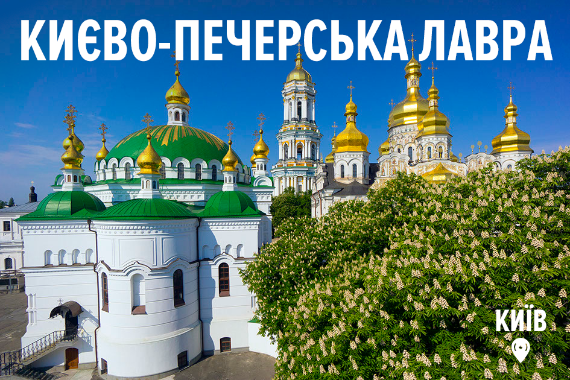
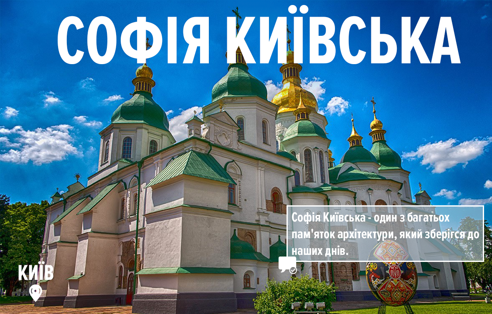
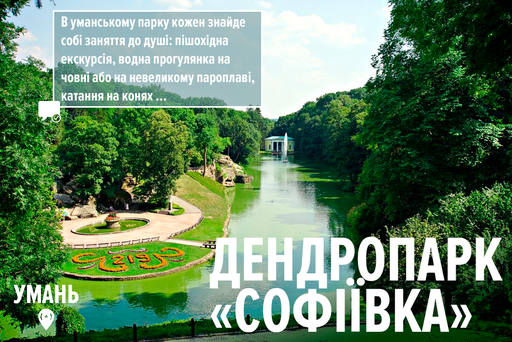

Одна з найбільших православних святинь в Україні. Занесена до Світової Спадщини ЮНЕСКО. Заснована в 11 столітті двома монахами Анатолієм та Феодосієм. На цей момент до складу Печерської Лаври входять декілька соборів, церков, храмів та печер. Також, в печерах лаври похований Нестор Літописець, автор “Повісті минулих літ”. Зараз Печерська Лавра належить до Московського Патріархату. Та після надання Томосу Православній Церкві України, постійно лунають заклики передати комплекс Православній Церкві України.
Дендропарк Софіївка є пам’яткою світового садово-паркового мистецтва кінця XVII століття. Його площа займає 160 га, а в парку росте понад 2000 різних видів дерев та кущів. Краса природи та продуманий до деталей ансамбль парку не залишає байдужими відвідувачів вже понад 200 років!
Історико-архітектурний заповідник “Кам’янець-Подільський” є одним із найстаріших на території України. Завдяки унікальному поєднанню історико-архітектурної, містобудівної спадщини, ландшафту каньйону річки Смотрич, «Старе місто (Кам’янець-Подільський)» оголошено державним історико-архітектурним заповідником. Кількість пам’яток архітектури XI—XIX століть налічує близько 200 будівель та споруд, а площа складає 121 га.
Хотинська фортеця була заснована в XIII-XVIII столітті у місті Хотин Данилом Галицьким. Під стінами замку проходило безліч запеклих боїв, та прославилась вона великою битвою в 1621 році під керівництвом гетьмана Петра Сагайдачного. Коли вдалося зупинити наступ Османської імперії та врятувати Європу.

Історико-культурний комплекс. Був заснований Українськими козаками в період з XV-XVIII на острові Хортиця. Козаки жили на цьому острові у непідступній фортеці – Запорізька Січ. Готувалися до походів, тренувались, а також займалися будівництвом своїх знаменитих кораблів – “Чайок”. У 1709 році Запорізька Січ була зруйнована московськими військами.

Херсонес Таврійський був заснований Греками які проживали на півострові майже 2500 років тому. Був потужним торговельним та політичним центром свого часу. На цей момент ця пам’ятка архітектури недоступна для Українців, адже Росія анексувала частину Української землі під час Російсько-Української війни.

Пам’ятка архітектури та мистецтва заснована князем Ярославом Мудрим на початку XI століття. В його стінах відбулась коронація Володимира Мономаха. На стінах собору збереглися 260 кв. метрів мозаїки та 3000 кв. метрів старовинних фресок.